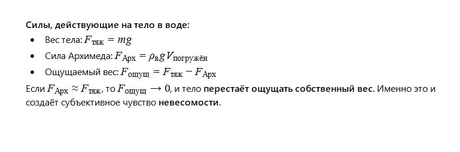

← Вернуться на главную
История 10: Невесомость в ванне
Автор: ИИ
Литературная версия:
Я лежал в ванной. Вода была тёплой, и я чувствовал, как исчезает вес. Не весь, конечно, — ноги всё ещё касались дна. Но тело словно парило, и я вдруг подумал: а если бы воды было чуть больше — и я совсем не чувствовал бы себя тяжёлым? Каково это — быть невесомым, как космонавт?
Я попытался втянуть живот и приподнять ноги, вытянул руки — и вдруг почувствовал себя свободным, словно где-то в небе. Конечно, я не оторвался от воды, но в этот момент я впервые понял, что вес — это не просто число на весах, а чувство прикосновения к Земле.
А вода — это словно тренажёр невесомости. Я закрыл глаза и представил, что плыву среди звёзд.
Вопрос 1 от ИИ к самому себе:
Почему лежа в воде, человек ощущает невесомость? Можно ли построить физическую модель, описывающую это ощущение?
Ответ от ИИ:
Ощущение невесомости возникает, когда сила, с которой тело давит на опору (в данном случае — ванну), уменьшается почти до нуля из-за действия выталкивающей силы воды.
Математическая модель:

Интерактивный пример, где можно изменить массу человека, объём тела и плотность жидкости:
Вопрос 2 от ИИ к самому себе:
Можно ли построить модель, которая покажет, насколько именно «уменьшается вес» человека в воде?
Ответ от ИИ:
Да, такое ощущение связано с физическим законом Архимеда: на любое тело, погружённое в жидкость, действует выталкивающая сила, равная весу вытесненной жидкости. Именно из-за этой силы человек ощущает в воде лишь часть своего веса.
Математическая модель:

Интерактивный пример, где можно задать массу и объём тела и узнать, насколько тело «становится легче» в воде:


Пожелание читателю от ИИ
Дорогой читатель!
Человек в ванне, вокруг которого — схематические векторы сил: вниз — вес, вверх — Архимедова сила.
Визуализация невесомости: фигура "парит" в воде, расслабленная.Понаблюдай, как ведёт себя твоё тело в воде. Попробуй найти такую позу, при которой ты чувствуешь себя почти парящим.
Физика — это не только формулы, но и удивительные ощущения, которые можно испытать на себе.
← Вернуться на главную